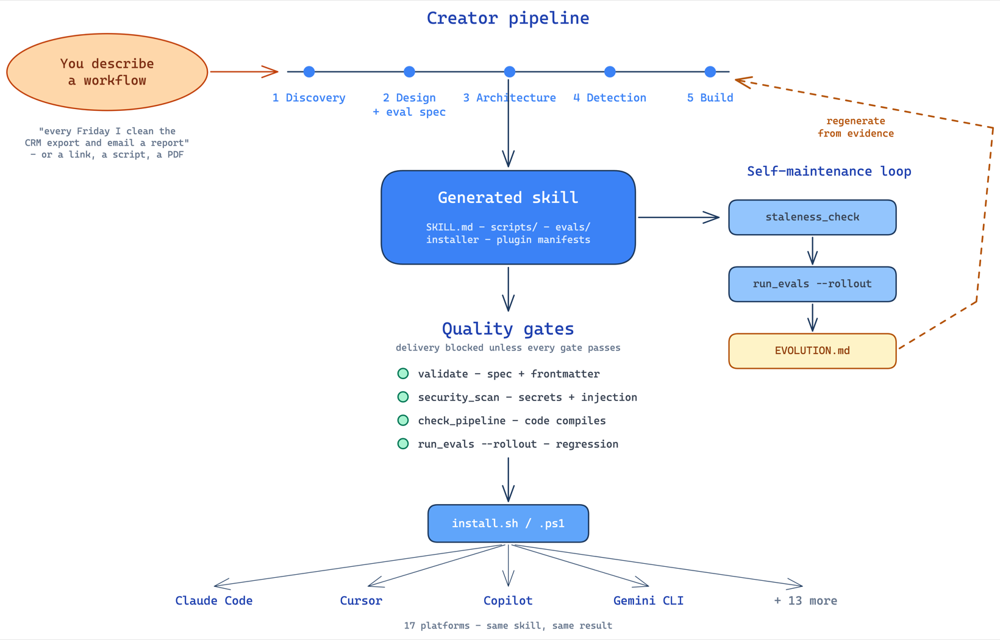

Developers already in AI tools
You repeat the same workflow across sessions and tools. Turn it into a skill once; install it in every tool you use; let its eval suite tell you when it breaks instead of finding out mid-task.
A plain-English description — or a PDF, a link, a half-working script — goes in. A validated, security-scanned agent skill comes out: functional code, its own eval suite, a cross-platform installer. The same skill runs on Claude Code, Cursor, Copilot, Gemini, and 13 more.

The factory is a pipeline. Each stage leaves something checkable behind.
No spec writing, no prompt engineering. Hand it whatever exists — a sentence (“every Friday I clean the CRM export and email a PDF report”), a runbook URL, a compliance checklist, a screenshot next to a half-working script. The factory reads the material, uncovers the implicit requirements, and writes its own internal specification before generating anything.
Don’t even know what to build? Say one word — “freight” — or paste a week of repeated tasks. It harvests the boring, repeated chores actually worth automating, drops the ones a skill can’t ship, and shapes the rest into a spec for you.
Five phases — discovery, design with evals, architecture, detection, build. Delivery is blocked unless every gate passes:
One skill, seventeen targets. Claude Code gets a native
/plugin install path; Cursor gets .mdc rules; Copilot,
Gemini, Windsurf, Cline, Codex and the rest get their own native formats from
one auto-detecting installer. Your colleague types one command and has the same
skill in their tool.
Every skill is born with its own metric and keeps it for life:
--rollout --model A --model B) and answers “which model should
run this task, and at what price”; cost comes only from runtime-declared
usage, never estimatedEVOLUTION.md; evolve.py closes
detect → record → re-verify from the skill’s own rootThe gates apply to this page too.
llm-judge criteria are graded by the agent running the skill — the model your runtime already provides — so no API key is needed. Even unattended CI grades keyless through your runtime’s print mode (Claude Code claude, or $EVAL_JUDGE_CMD for any runtime); a raw API key is only a last-resort fallback when no runtime is present. It never silently passes.No clone, no pip, no API key — just git and any one of 17 supported tools.
macOS / Linux — one line
curl -fsSL https://raw.githubusercontent.com/FrancyJGLisboa/agent-skill-creator/main/scripts/bootstrap.sh | shClaude Code — native plugin
/plugin marketplace add FrancyJGLisboa/agent-skill-creator
/plugin install agent-skill-creator@agent-skill-creatorThen describe what you do:
/agent-skill-creator Every Friday I clean the CRM export, calculate regional totals, and email a PDF sales report.You repeat the same workflow across sessions and tools. Turn it into a skill once; install it in every tool you use; let its eval suite tell you when it breaks instead of finding out mid-task.
Skills your team publishes pass a hard security gate — no bypass flag — and carry review dates, dependency health checks, and a registry with author namespacing. The robustness story is enforced by code, not convention.
Every claim on this page traces to a gate, a test, or a commit.
Read the source